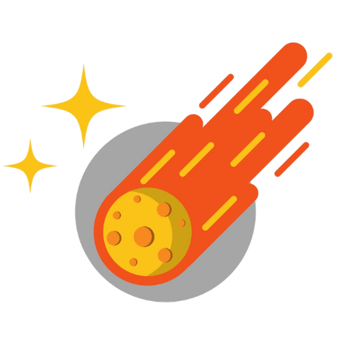

Wendel
API NASA & IntegraçõesComunicação com a NASA NeoWS API, requisições HTTP assíncronas, serialização JSON e pipeline de dados externos.
@wndelix ↗Tudo começa com um olhar. Antes do código, das equações e da engenharia, existe a curiosidade pura de quem olha para o céu e se pergunta o que há além.
A Orberyx nasceu para transformar esse encantamento em tecnologia. Construímos pontes de código entre os dados do cosmos e a tela do usuário.
"Tudo começa com um olhar. Antes do código, das equações e da engenharia, existe a curiosidade pura de quem olha para o céu e se pergunta o que há além.
A Orberyx nasceu para transformar esse encantamento em tecnologia. Construímos pontes de código entre os dados do cosmos e a tela do usuário, provando que o conhecimento do universo não pertence apenas aos laboratórios, mas a qualquer mente curiosa com um telescópio, ou um computador."
A mesma faísca de quando uma criança ergue os olhos para a abóbada celeste e questiona o infinito. Essa inquietação é a matéria-prima de tudo o que projetamos.
Transformar telemetrias brutas, APIs orbitais da NASA e algoritmos rigorosos em arquitetura limpa, persistente e compreensível em Java.
Tirar a astronomia do hermetismo acadêmico. Colocar a trajetória de asteroides e o pulso do universo diretamente diante de qualquer observador.
A Orberyx é uma startup acadêmica originada na disciplina de Programação Orientada a Objetos. Unimos o rigor do aprendizado técnico à fascinação pela astrofísica e exploração espacial.
Não criamos apenas software para atender a uma ementa; fundamos a Orberyx como um laboratório colaborativo onde cada linha de código em Java, cada query relacional e cada fluxo de dados reflete o padrão de engenharia do mundo real.
Nosso objetivo primordial é desenvolver soluções tecnológicas de alto nível, integrando programação orientada a objetos, consumo de APIs científicas e interfaces intuitivas com foco no cosmos.
Desenvolver soluções tecnológicas que integrem programação, dados e ciência de forma acessível, funcional e rigorosamente estruturada.
Aplicar os conhecimentos adquiridos durante a formação no desenvolvimento de sistemas colaborativos, robustos e capazes de aproximar pessoas comuns dos mistérios do universo.
Desenvolvimento conjunto, decisões alinhadas e divisão orgânica de responsabilidades na equipe.
Busca por soluções criativas, padrões arquiteturais elegantes e tecnologias de vanguarda.
Evolução contínua através de pesquisa prática, resolução de problemas reais e testes constantes.
Código limpo, documentação detalhada, versionamento consistente e modelo DAO transparente.
Aplicação da computação moderna para conectar dados de observatórios espaciais ao usuário final.
Acompanhe a trajetória de corpos celestes em rota próxima à Terra com precisão científica e telemetria oficial da NASA.
"Monitoramento e rastreamento de asteroides em tempo real."
O AstroWatch é uma aplicação desktop desenvolvida em Java que se conecta diretamente aos sistemas da NASA (API NeoWS). Ele decodifica trajetórias, velocidades relativas, datas de aproximação máxima e identifica potenciais riscos ao nosso planeta em uma interface gráfica moderna e fluida.

Estudantes, pesquisadores e desenvolvedores unidos pela vontade de decodificar o universo através da ciência da computação.
Comunicação com a NASA NeoWS API, requisições HTTP assíncronas, serialização JSON e pipeline de dados externos.
@wndelix ↗Modelagem relacional, persistência com JDBC, camada DAO, integridade referencial e estrutura de entidades.
@renancardoso09-maker ↗Concepção e construção da interface visual em JavaFX, arquivos FXML, folhas de estilo CSS e experiência do usuário.
@niveamaria11-dev ↗Algoritmos de classificação, filtragem paramétrica de asteroides e ordenação por diâmetro, velocidade e perigo potencial.
@Adriel12179 ↗Mecanismos de autenticação, controle de sessões de usuário e gerenciamento do catálogo de asteroides favoritos.
@Mayrllon14 ↗Estamos apenas no início da nossa jornada orbital. Acompanhe a evolução do código, colabore com as nossas pesquisas ou venha observar os asteroides conosco.